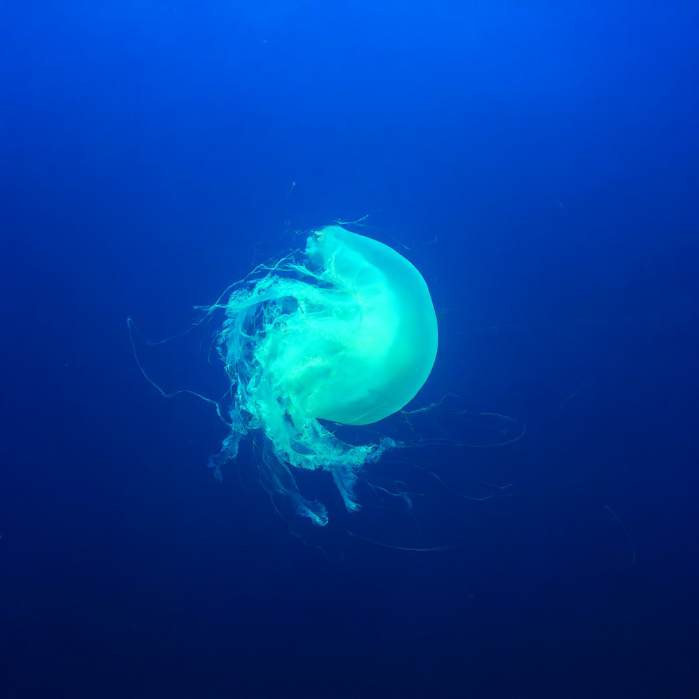

¿Por qué es mi animal favorito?
Las medusas son seres increíbles que llevan más de 500 millones de años en la Tierra, incluso antes que los dinosaurios. Se mueven con una gracia hipnótica, como si flotaran en el agua, y su cuerpo casi transparente las hace parecer criaturas de otro mundo. Me encanta cómo se dejan llevar por las corrientes, tranquilas y en calma, sin prisa.
Datos curiosos sobre las medusas
- No tienen cerebro, corazón ni huesos, y aun así sobreviven perfectamente.
- Están compuestas en su mayoría (más del 95%) de agua.
- Algunas especies son bioluminiscentes y brillan en la oscuridad del mar.
- La medusa inmortal (Turritopsis dohrnii) puede revertir su envejecimiento y volver a ser joven.
Un vistazo a las medusas

Enlaces para saber más
Si quieres conocer más sobre las medusas, visita estos sitios:
Sabías que...
- las medusas no tienen huesos
- No sienten dolor
- pueden volver a ser bebes
Mi opinion
- elegi este tema por que me gustan mucho las medusas siento que es un animal muy interesante pq es diferente en forma y como actuan hacen cosas diferentes a otros y son muy lindos
- lo que mas me gusta es por que puedo hablar libremente sobre ella la medusa que es un animal tan maravillodos y divertido de ver
- aprendi mas sobre ellas ya que investigando mas sobre ellas salieron mas cosas que no sabia como que son 90% agua y demas .